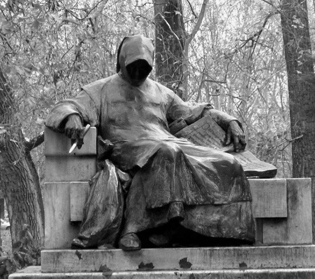
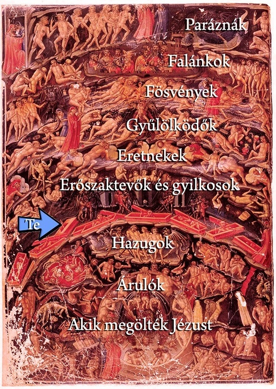

Ha rám találtál, valószínűleg öngyilkosságon gondolkodsz és valami jó módszert vagy hasznos véleményt keresel. Reméljük, hogy segítségedre lehetek. Megmutatom, hogy én mit gondoltam át, amikor ezen elmélkedtem.
Álszent lenne úgy tenni, mintha ismernélek vagy érteném, hogy mi a problémád, úgyhogy nem is próbállak lebeszélni. Én azonban fontosnak tartok néhány elvet, ezért nem hallgathatom el, hogy nagyon fontos, hogyan is fejezi be az ember az utazást. Lehet, hogy ezt nem gondoltad át, de elég lényeges kérdés, hiszen minden ismerősöd erre fog emlékezni. Ha nem derül ki, miért is történt, abból félreértések lehetnek.
Arról van szó igazából, hogy ez a súlyos és végleges tett üzenet lesz, egy elég vaskos felkiáltójel a többiek életében, nem árt átgondolni, hogy akarunk-e vele üzenni és ha igen, akkor mit. Három dolgot érdemes átgondolni:
Ez is egy fontos kérdés, folyamatosan ez zakatolt a fejemben.
A leggyakoribb életpanasznak azt látom, hogy nincsenek célok, nincs miért küzdeni, úgy látszik, hogy elmarad a jutalom. Hiányzik a remény, hogy van értelme előrébb menni, küzdeni. Gyakran ez az érzés pótcselekvésekhez vezet, mivel a valódi cél, a boldogulás elérése látszólag megvalósíthatatlan. Néhányan isznak vagy vadul szórakoznak, de vannak olyanok is, akik másfelé menekülnek, például külföldre utaznak.
A felelősség áttolása jellemző sokaknál, hibás a világ, a család, a barátok. Csakhogy ismerek néhány embert, akik az új világ reményébe futva is ugyanúgy folytatták az életüket, mint itthon. Többet kerestek, de a kiadások is nagyobbak voltak, a munka pedig néha még rosszabb is. Amiben nem voltak jók vagy nem tetszett nekik az emberekben itthon, az nem igazán változott.
Valami ilyen érzésem volt akkor is, amikor azt mérlegeltem, hagyjam-e magára a világot, amely magára hagyott engem: megöljem-e magam? Tudnom kellett ehhez, hogy mi lehet azon az oldalon, ahonnan még nem tértek vissza. A túlvilágról szóló tanítást eszkatológiának nevezik, és ezerféle vallási és filozófiai megközelítése van, de találtam néhány közös pontot.
Mivel igazából nem tudom, milyen ember vagy, és sokáig magamról sem tudtam, hogy mit is higgyek, érdekelt mindenféle nézőpont. A következőket tudjuk:
Ez elég érdekes lenne, azt jelenti, hogy ez a földi létezés, amely azért elég kényelmetlen tud lenni, nem önmagában való, van más, több is. Ha ez igaz, akkor kérdéses, hogy itt mi a cél, miért van ez itt. A kereszténység szerint például egyféle próbatétel, mely nyomán ítélet születik, és van pokol is.
Hát erről nincs sok ismeretünk, csak ihletett írások vannak. Az tuti, hogy még az itteni szivatásnál is rosszabb hely, Dante például elég részletes leírását adta. Az most mindegy, hogy olvastad-e, igazából nem egy mai regényes leírás, a lényeget meg úgyis most megmutatom.
Szóval a vallásos elmélet szerint a pokolnak is vannak szintjei, ahogyan például bizonyos szintig a mennyországnak is, attól függően, hogy mit érdemeltünk ki. Mivel a szent írások a világ minden táján alapvetően tiltják az emberölést, amelybe az öngyilkosság is beletartozik, ha létezik, akkor a pokol a következő állomás: az öngyilkosság pokoljárássá változik.
Most igazából elég nehéz elképzelnem, hogy ez pontosan hogyan is van, de nagyjából arról van szó, hogy az öngyilkosság beleszólás az isteni jogkörbe, egy élet önkényes megszüntetése, az pedig annyira rossz, hogy a lelket a sátán azonnal megkaparintja. Sőt ennél is jobban jár: az illető családját (édesanyját, testvéreit stb.), barátait és akár csak közvetlen környezetét érintő fájdalom és gyász is az ördög kezére játssza a lapokat, ezért ekkora bűn. Olyan, mintha a barátaid összedobnának neked egy új kocsira, te belepattannál, aztán áthajtanál rajtuk.
Végül is tehát a nagy játék szabályszegő befejezése, olyan, mintha a sakktábláról a rossz állásnál lesöpörnéd a bábukat. Ha valaki azért öli meg magát, mert úgy érzi, nem szeretik, éppen azoknak okoz kínokat, akik szeretik, és ez elég gáz.
Dante elég szemléletesen adott betekintést a pokolba. Annak mind mélyebb és mélyebb bugyrai közül az öngyilkosoké a hetedik a kilencből. A gyilkosokkal, istenkáromlókkal egy körben szenvednek, a középső gyűrűben. Fává vannak meredve, amely vérezni kezd, mikor letörik ágait. Ez persze csak szimbólum, mások forró ürülékben főzetést vagy vérben fuldoklást képzelnek el. Összességében az elmondható, hogy a pokolban nagyon mélyen helyezkednek el az önpusztítók.
Persze sokan azt mondják, hogy nem számít, a pokolban sok az ismerős, meg egyéb humorosnak szánt benyögésekkel ütik el, de hát a folyamatosan felforró vér, a minden pillanatbeli szenvedés és halál összességében elég rémisztőnek tűnik. De ezek elképzelhetetlenek egy ember számára, szóval végül is a lényeg, hogy ott már nincs mód a dolgok megváltoztatására. Szerb Antal azt írta, hogy aki él, azzal mindig történik valami. Ez az, amit elvesznek attól, aki már nem él. Nem változtathat, a túlparton csak szemlélődés van: a rossz állapot örökké fennmarad, épp az, amitől menekülni próbálnánk.
Az tény, hogy a kereszténység nem a gyáváknak való, hiszen az életedről nem dönthetsz. De a hinduknál sem könnyebb, ott meg a karmaelmélet miatt nem is lehet meghalni: ha valaki megöli magát, újjászületik, csak büntetésből még rosszabb állapotban. Az iszlám sem engedi, gyakorlatilag tehát bármelyik vallást vizsgáljuk, az biztos, hogy az öngyilkosság nagy hiba.
Az újjászületést vagy újjátestesülést hirdető vallások szerint az önpusztítás hosszú elszegődés életellenes szellemek mellé, például betegségek természetfölötti erőihez. Az újra és újra elkezdett életekben pedig mindig előjönnek ugyanazok a problémák, melyek megoldása szükséges ahhoz, hogy jó erőket fölvéve a túlvilágon megpihenhessen a lelkünk.
Könnyebb hát nem hinni semmi felsőbbrendűben. Azt mondják, a bűnösök könnyen mondanak le Istenről, hiszen ők a pokolról mondanak le vele. Ezért átgondoltam a másik lehetőséget is…
Nincs jó bíra, sőt senki sincs a halál után. Minden esetleges, célszerűtlen, véletlenek következménye. Mindent lehet, bár nem fog számítani végül, hiábavaló felsőbbrendűségről, túlvilágról beszélni, mert nincsen. Mi történik ekkor?
Maradnak az élők, és marad egy halványuló emlék valakiről, aki eddig volt, de már nincsen, ahol eddig ő létezett, ott most hiány támadt. Talán önvád, szomorúság, szenvedés marad itt. Talán lesz akkora közöny, amekkorát az öngyilkos tanúsít a világ ellen. Egy biztos: megoldás nem lesz. A problémák, melyek elől menekülünk, létezni fognak, ha már a mi életünkben többé nem, mert nem élünk, majd másokéban, máshogyan. A világ folyik tovább, de a mi reményünk a jóban velünk száll a sírba. Örök időkre konzerváltuk azt a rossz állapotot, amelyből menekültünk, mert már nem változhat meg többé.
Így vagy úgy, de szerintem mindenki gondolt már arra, hogy mi az a végső kép, amely illene hozzá. Ez a kérdés nagyon nehéz, a színpadiasságtól mentesen gondolkodni, de közben biztosra menni nem könnyű.
Gondolkodtál már azon, mitől olyan sikeresek a horrorfilmek? Úgy értem, valahol érdekes, hogy az emberek félnek bizonyos dolgoktól, például egy hokimaszkban támadó láncfűrészestől, a kútban lévő lány szellemétől vagy akár boszorkányoktól, szörnyektől. Mindezek egy közös félelmet szimbolizálnak: azért ijesztőek, mert halált jelentenek.
Az a gondolat, hogy az utolsó pillanatokban szembejön a halál: az összes félelem valósággá válik, kiderül, hogy mi az igazság, nagyon is ijesztő. A föntiek alapján az már látszik, hogy nehézségek miatt öngyilkosnak lenni nem jó halál, amely felé ráadásul saját magunk futunk.
De vegyük számba a gyakori öngyilkossági módszereket!
A lányok, meg most már a lányos fiúk kedvence. Itt persze a leggyakoribb motívum nem az, hogy „meg akarok halni”, hanem inkább az, hogy „figyeljetek rám, így nem akarok élni”. A csuklóvágásba ugyanis nem szokás belehalni. Akármennyire is köznapinak tűnik, ezt általában túlélik. A fájdalom és vér viszont elég kellemetlen, a hegek pedig még egy-két évig talán keménynek tűnnek a suliöltözőben, de a későbbi életben, például a párkapcsolatokban legalábbis kellemetlen, ha nem egyenesen romboló hatású a vagdosás nyoma.
Maga az elképzelés is érdekes: rendszerint a fürdőszoba összevérzése, meg a hideg padlón fekvés a program az ezt választóknak, amíg a fájdalom, meg gyomorgörcs miatt végül nem hívják a mentőket. Takarítani pedig nagyon gáz. Úgyhogy ez nem ajánlott.
Az önmagunk ellen emelt fegyver főleg a férfiak között gyakori, de természetesen a rendőrök, katonák és vadászok között fordul inkább elő, mert ők rendelkeznek lőfegyverrel. Amellett, hogy megbízható fegyvert találni sem könnyű, ez a módszer sem olyan hatásos, mint azt a többség hinné: több mint az áldozatok fele ébred aztán föl a kórházi ágyon némileg kevesebb állkapoccsal vagy koponyacsonttal.
Ha úgy érzed, hogy az életed elég gáz, akkor tényleg hülyének kell lenni ahhoz, hogy aztán még le is bontsd a fejed mellé, esetleg permanens agykárosodással egy kórházi ágyon fekve, magad alá piszkítva éld le a maradék részét. A helyszínelők elmondhatják, hogy az életösztön még az öngyilkosokban is föléled: az utolsó pillanatban szinte kivétel nélkül elrántják a fegyvercsövet, ez ellen nem igazán lehet tenni, a károsodások viszont maradandók szoktak lenni. Ez a módszer sem elég hatásos.
Ez is főleg a nők között kedvelt dolog. Sok gyógyszert vesznek be, azt remélve, hogy majd elalszanak, aztán nem ébrednek föl. A férfiak ezt kábítószerekkel szokták megoldani. A remek elképzelésbe igen gyakran némi hiba csúszik, a gyomor ugyanis több dolgot tud csinálni a mérgekkel: egyrészt heves gyomorgörcsök kíséretében elöl-hátul elkezd kiömleni a gyomortartalom, a remek öngyilkossági ötletből pedig hányásperformansz alakul. Másrészt ha ez nem is történik meg, az igazán ellenálló emberi szervezet nem mindig lesz olyan kegyes, hogy föladja a harcot: nagyon sokan kilyukadó gyomorral, leállt májjal, szóval szépen megpusztuló belső szervekkel folytatják az életet. Egy kórházi ágyhoz vagy akár kerekesszékhez kötve, élethosszig gépekkel vagy kemikáliákkal működésben tartott szervezettel. Ráadásul fáj. Nagyon.
Akik ezt választják, szeretnének békésen, fájdalommentesen elmenni, és nem akarják horrorfilmekbe illő módon itt hagyni a testüket. Csakhogy annyira bizonytalan a siker, hogy túl gyakran fájdalmakkal és maradanó károsodásokkal térnek magukhoz. A statisztikák szerint a túladagolás az egyik legritkábban működő öngyilkossági módszer. Nem ajánlott.
Az önakasztás főleg a férfiak között gyakori, sőt Magyarországon a leggyakoribb módszer. Pedig nem a vadnyugaton vagyunk, sőt még csak nem is Nyugaton… Korábban büntetés volt az akasztás, így végeztek ki számtalan háborús bűnöst, és nem azért így, mert kíméletesek akartak lenni velük. Valójában az akasztás veszélyes és nehéz műfaj, a képzetlen hóhérok sokszor el is rontották. Az eredeti eljárás ugyanis nem megfojtja az áldozatot, hanem eltöri a nyakát. Csakhogy ezt megreszkírozni nem éri meg: ha nem sikerül, akkor egy életre lebénulhatsz egy gerinctöréssel, sőt a több mint félórás fuldoklás sem ritka. A kötél olyan mélyre vág a nyakba, hogy a nyoma egy életen át látszik majd. Bármennyire is népszerű, a felsoroltak közül biztosan ez lenne a legutolsó megoldás, amelyiket megpróbálnám.
Egy este megismerkedtem egy mozdonyvezetővel, Adolfnak hívták (nem röhögni, ezt tényleg nem kitalálom). Hajnalig beszélgettünk egy kocsmában. Két héttel korábban ütött el egy öngyilkost. Azt mondta, ő egészen könnyen földolgozta, csak néhány napig voltak rémálmai, de sokan egy életre tönkremennek belé. Meg hát isznak.
De nem ez a legérdekesebb: mondta, hogy van valami, ami mindig közös, minden kollégája, aki gázolt már, beszámolt róla. Az a pillanat pedig beleég örökre az emlékükbe. Míg az öngyilkos ezt előre eltervezte, nekik csupán néhány pillanat az egész: egy szemvillanás, ahogyan észreveszik a síneken álló vagy fekvő embert, egy másik pillanat, amíg vészfékezni kezdenek, de már tudják, hogy a monstrum megállíthatatlan. A masiniszták mindig ugyanazt teszik: megpróbálják elkerülni a gázolást. De eközben van egy közös minden történetben, mert az öngyilkosok is mindig ugyanazt teszik! A síneken ülő alak a szemükbe néz: fölnéz a mozdonyvezetőre, és ha látják is a szemén az ijedtséget, hogy meggondolta magát, már addigra nem tud ellépni.
Ez az egyik legfontosabb kérdés, úgy értem, azért nagyon nem mindegy, hogy mikor akarunk kilépni az életből. Igazán nagy blődség lenne mondjuk, ha éppen a nyertes lottószelvénnyel a zsebünkben mennénk a Dunának… De honnan lehet tudni, hogy nem lesz már jobb, hogy be kellene fejezni? Ez tényleg annyira biztos?
Emlékszem rá, hogy gyermekkoromban minden olyan véglegesnek tűnt: mintha kiestem volna az időkontinuumból. Ami megtörtént, azt a világmindenség végéig érvényes álló valóságnak tekintettem. Ha kigúnyoltak vagy magam rontottam el valamit, azt hittem, ez a stigma, szégyenfolt örökké rajtam fog maradni. Idővel persze elmúlt az érzés.
Az első szerelemre is azt hittem, hogy az utolsó. De azt hiszi a tizenéves lány is, aki húszas évei végére már fél tucatszor lesz szerelmes… Szóval nem olyan állandóak a dolgok, mint azt sokáig gondoltam. Másrészről pedig valóban vannak megváltoztathatatlan történések, például amikor meghalt a nagyapám, emlékszem, hogy csak napokkal (talán hetekkel?) később tudatosult bennem, hogy tényleg nincs többé.
Azonban van itt egy nagyon fontos gondolat, amelyet megfontoltam, ezért merek ajánlani is: Szerb Antal írta, hogy aki él, azzal mindig történhet valami. Ez az egyszerű mondat mély igazság felismerése volt számomra, azt jelenti, hogy rengeteg változásból, örömből, újdonságból maradnék ki, ha elmennék, sőt lehetséges, hogy nem valósíthatnám meg azt, amiért élek, amiben jó vagyok vagy amiért erre a világra születtem.
Erről eszembe jut egy történet, amely valóban megtörtént: egy magyar fiút az ’56-os forradalom után börtönbe vetettek. Azt hitte, hogy itt tényleg vége az életének, hogy halálra fogják ítélni, de ha nem is, most tört derékba minden. Más könyve nem volt a cellában, csak egy angolkönyv, így iskolai emlékeire támaszkodva megtanulta a nyelvet. Szabadulása után külföldre került. Később jó karriert futott be és leendő feleségét is abban az országban ismerte meg. És akkor őszintén elgondolkodott: vajon akkor, a levert forradalom árnyékában vele jó vagy rossz dolog történt? Ha nem megy át a tortúrán, akkor nem tanul meg angolul, ha nem tanul meg angolul, akkor nem kerül külföldre… és így tovább. Az élet rendjét nem látjuk át, mert nem látunk a jövőbe, nem érthetjük meg a történések hosszabb távú, beláthatatlan hatásait. Csak utólag pörgethetjük végig, hogy mennyit számít néha egy lekésett busz vagy kihagyott edzés stb.
A másik, ami mindig visszatartott egy ilyen felelőtlen döntéstől, amikor beteg, fogyatékos emberek élni akarásával találkoztam: mindenem megvan ahhoz, hogy talpra tudjak állni, épek a végtagjaim, sőt talán még tehetséges is vagyok, de legalábbis vannak, akik számítanak rám, akiknek csalódást okoznék – és még én érzem úgy, hogy minden hiábavalóság?
Van egy érdekes elmélet, amely nagyon tetszett nekem, mikor meghallottam: mivel az emberek átlag életkora 75 év, amíg nem múltam 38 éves, statisztikailag ötven százalék esélyem van rá, hogy várnak rám életem legjobb élményei…
Jó, persze, ez egy személyes lista, mint látszik is, de a lényeg talán érthető. Mivel pedig életem első tíz évében tényleg semmit sem csináltam és nem is emlékszem semmire, ez az ötvenszázalékos szabály bőven kihúzható negyvennyolc éves koromig. Azaz tényleg előttem állnak olyan dolgok, amelyeket egyszerűen vétek lenne kihagyni – főleg akkor, ha a semmiért vagy a végtelen szenvedésért dobnám el őket. Nem akarok a legnagyobb hülye lenni, és lemaradni arról, ami még előttem áll!
(Ez nagyon profán téma, ezért zárójelbe is teszem, de meg kell említenem, mert gyakran előjött tinédzser koromban. Úgy éreztem, hogy hajtanak a többiek, sietnem kell valahová. Magam sem tudtam – és ők sem tudták –, hogy mi elől vagy mi irányába futunk, de mindennel elsőnek kellett lenni, mindenből versenyt csináltak. Így volt ez a szexszel is. Azt hittem, tiszta idióta vagyok, hogy annyi évvel lemaradtam a legmenőbbnek hitt osztálytársaim mögött. Aztán persze kiderült, hogy az egész csak egy nagyra fújt lufi, amely ki is durrant. Egyrészt nem maradtam le semmiről, másrészt az ajnározott és bálványként tisztelt gyönyörű lányok valójában igazán nagy csalódást jelentettek. És ebben minden ismerősöm egyetért: a legmenőbb, legszebb, leghelyesebb lányok vagy srácok általában emberként vagy teljesítményükben elég rosszul teljesítenek. Nem voltam sosem egy szép ember, de kiderült, hogy nem ez számít. És az is kiderült, hogy a „szépségnek” nevezett művi mázt is csak addig üldöztem, míg meg nem kaptam, és hát nem felelt meg. Szóval, ha ilyesmi miatt lógatod az orrod, akkor hidd el, pár év múlva el sem hiszed, mennyire félreértettél dolgokat.)
Ez elég fontos kérdés. Két dolog áll egymással szemben: jó volna elmondani a világnak, hogy miért érezzük magunkat rosszul, viszont nagyon hiteltelen lenne visszaszólni a halálból. Most menni akar az ember vagy maradni? Az üzenet az élőkhöz szól, az élők világához köt.
De mindenképpen le kell írni, hogy mi bánt. Jobb is átlátni, leírni, megfogalmazni ezeket az érzéseket. Jó, tudom, hogy néha rossz leírva látni, de igazából néha azért nem szeretjük az ilyesmit, mert mégsem tűnik olyan kezelhetetlennek a dolog. Érdemes leírni, ha pedig lehet, fölolvasni valakinek, akiben bízunk. Ez azért fontos, mert egy másik nézőpontot, egy kívülálló személy véleményét is meghallgathatjuk, és ez nagyon sokat számít. Másrészt a gyónást sem véletlenül találták ki: az őszinte beszéd, a belső, zavaros, talán félelmetes érzéseink őszinte kimondása csodákra képes! A másik személy végre tényleg értheti azt, ami előtte csak kibogozhatatlan problémahalomnak tűnt. Engedjük, hogy megértsenek. Ha úgysem számít semmi, akkor ezt megtehetjük, ha viszont valamiért nem akarjuk, szégyelljük, akkor bizony óriási butaság volt öngyilkosságot a fejünkbe venni, mert mégis itt tart valami érzés.
Becsületbeli kérdés mindent megpróbálni.
Ha nem akarsz vagy tudsz ismerőssel beszélgetni, javaslom, hogy hívd föl az ingyenes és teljesen névtelenül tárcsázható 116-123 telefonszámot, ahol önkéntesek fogadják a hívásod, és meghallgatják, amit leírtál.
Zoli